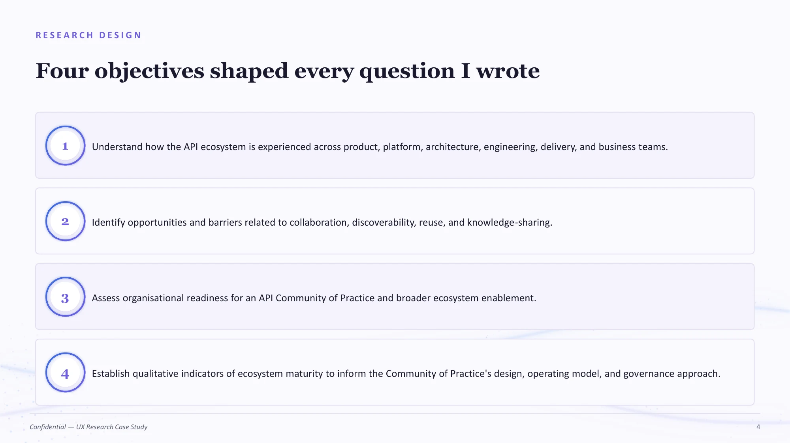
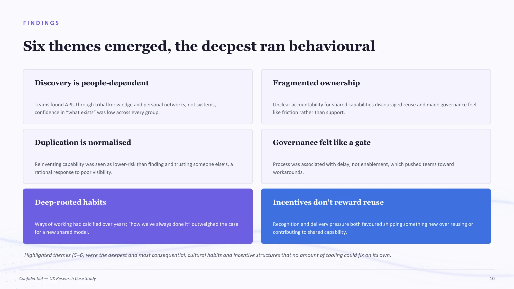
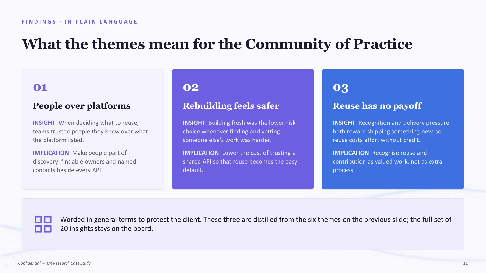
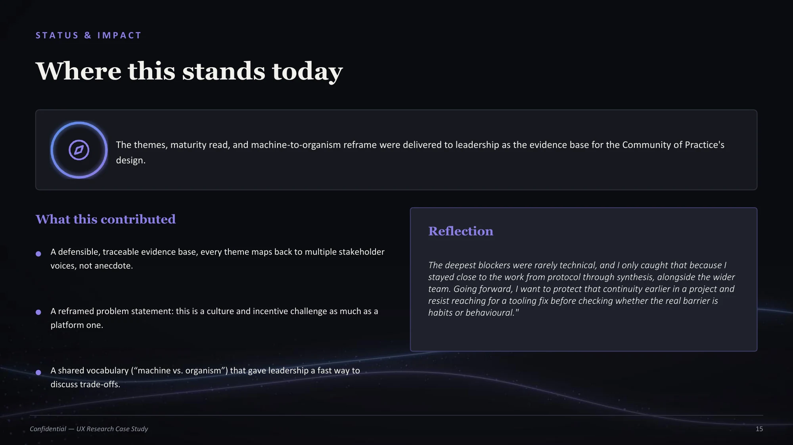

Role-specific protocol
Five-part interview flow, scenario prompts, consent and a separate executive track.
A discovery engagement into the human layer of an enterprise API ecosystem: why teams rebuild, what makes reuse difficult, and how a connected community could help.
The Marketplace was live, but leadership lacked evidence about why teams struggled to discover, trust and reuse APIs. This discovery engagement investigated the human and organisational conditions behind that gap and informed a proposed API Community of Practice.
Research question What makes teams build again instead of finding, trusting and reusing what already exists?
I designed the protocol around four objectives: understand business and technical roles; identify barriers to collaboration and reuse; assess qualitative maturity; and explore readiness for a Community of Practice. I led 9 of 16 interviews, each 30–45 minutes, recorded with consent.
Five-part interview flow, scenario prompts, consent and a separate executive track.
Architects, subject-matter experts, business analysts, developers, UX, API leads and executives.
Transcript fragments clustered by behaviour, then prioritised by frequency, intensity and business impact.

I helped turn interview observations into 20 insights and six recurring themes. The synthesis looked for patterns across roles rather than treating individual comments as findings.
Teams relied on personal networks and tribal knowledge.
Building again felt safer than assessing someone else’s API.
Established ways of working outweighed the case for change.
Unclear accountability weakened confidence in shared assets.
Processes were associated with delay and workarounds.
Delivery incentives rewarded new builds over shared contribution.
Central insight: API reuse was not simply a search problem. Trust, ownership, habits and incentives shaped behaviour. Detailed board content is withheld under NDA.

I worked within a seven-person design team and with bank stakeholders. I owned the interview protocol, led 9 interviews and facilitated affinity mapping and ideation. The group reviewed patterns, challenged interpretations and explored what each finding meant for a Community of Practice.
Connected protocol design, interviews, synthesis and facilitated ideation.
Used a shared affinity board and behaviour-change questions to move from evidence to ideas.
Influence: The direction was shaped with stakeholders, not simply handed over as a design-team recommendation.
The evidence challenged the assumption that better tooling alone would improve reuse. The direction reframed the Community of Practice as an operating model: make ownership visible, lower the perceived risk of reuse and recognise contribution as valuable work.
Connect APIs to owners and trusted contacts.
Reduce uncertainty when finding and assessing shared capabilities.
Recognise reuse as part of delivery, not extra work.

Three recommendations translated the research into practical design implications: make API owners discoverable; reduce the effort and uncertainty of evaluating shared APIs; and recognise reuse and contribution. The broader machine-to-organism reframe proposed distributed ownership, self-organising parts and continuous adaptation.
Design the conditions for reuse before adding another layer of process. The recommendations informed the proposed Community of Practice; they are not presented as implemented changes.
The documented outcome was a traceable set of themes, a qualitative maturity read and shared language for discussing the operating model. The machine-to-organism metaphor helped communicate strategic trade-offs.
Measurement boundary: No post-project change in discovery time, reuse rate, duplicate API creation or developer satisfaction was documented. These are proposed future measures, not achieved outcomes.

The strongest lesson was continuity: staying close from protocol through synthesis protected the link between what people said and what the team recommended. Enterprise problems can appear technical while being shaped by culture, incentives and behaviour.
My takeaway: Research created value by reframing the problem and giving leadership a grounded direction for change.
Scroll or swipe through the slides. Use the arrows or keyboard arrow keys to move one slide at a time. Select a slide to zoom in.
Research conducted within a seven-person design team. I led 9 of 16 stakeholder interviews and contributed to synthesis and ideation. Client details are anonymised under NDA.